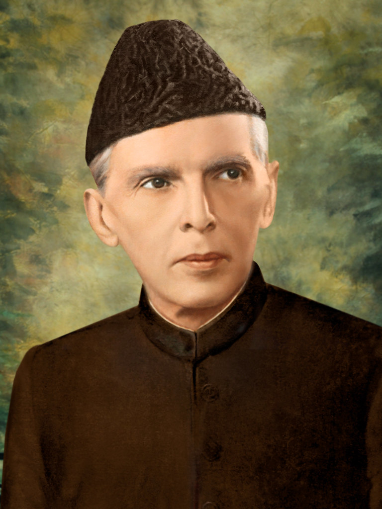

Muhammad Ali Jinnah
(Quaid E Azam)
One Man Army
Muhammad Ali Jinnah, born on December 25, 1876, was a barrister, politician, and the founder of Pakistan. He played a pivotal role in shaping the destiny of the Indian subcontinent. The founder of Pakistan, Quaid-e-Azam Muhammad Ali Jinnah, is the Pakistan National Hero who played a significant role in the independence movement of Pakistan. He was a visionary leader who fought for the rights of Muslims in the subcontinent and eventually succeeded in creating a separate homeland for them.